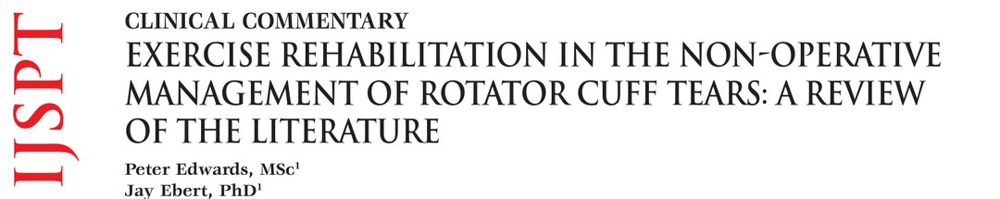
🔖原文首页（IJSPT 2016 年第 11 卷第 2 期）
📚 文献卡片
▪ 英文原题：Exercise Rehabilitation in the Non-Operative Management of Rotator Cuff Tears: A Review of the Literature（肩袖撕裂非手术治疗中的运动康复：文献综述）
▪ 作者：Peter Edwards, Jay Ebert, Brendan Joss, Gev Bhabra, Tim Ackland, Allan Wang
▪ 机构：西澳大学运动科学、运动与健康学院 · 西澳大学外科学院 · 珀斯 Hollywood 私立医院
▪ 期刊：International Journal of Sports Physical Therapy（IJSPT）
▪ 年卷期：2016;11(2):279-301
▪ PMCID：PMC4827371
▪ 文章类型：临床评论（Clinical Commentary）
▪ 证据级别：5 级
▪ 关键词：Conservative management · exercise rehabilitation · physical therapy · rotator cuff tear
"The incidence of rotator cuff tears increases with age, with full-thickness rotator cuff tears present in approximately 25% of individuals in their sixties, and more than 50% of those in their eighties."
"肩袖撕裂的发生率随年龄增长：60 多岁人群中约 25% 有全层撕裂，80 多岁人群中超过 50%。"
美国 60 岁以上人群中至少 10%（约 570 万人）有肩袖撕裂，每年肩袖手术 7.5 万～25 万例；澳大利亚每年约 1.4 万例，花费约 2.5 亿澳元。
但手术之后止点处再撕裂很常见，尤其是老年人的退行性撕裂。与此同时，越来越多的研究显示：选择物理治疗的患者满意度高、功能改善，而且成功避免了手术。
"Non-surgical management such as physical therapy and exercise may, in selected cases, be a treatment alternative to surgical repair."
"在经过筛选的病例中，物理治疗和运动等非手术方法可以作为手术修复的替代方案。"
这篇综述要回答三个问题：肩袖为什么会撕？哪些人该先保守？保守治疗具体怎么练？
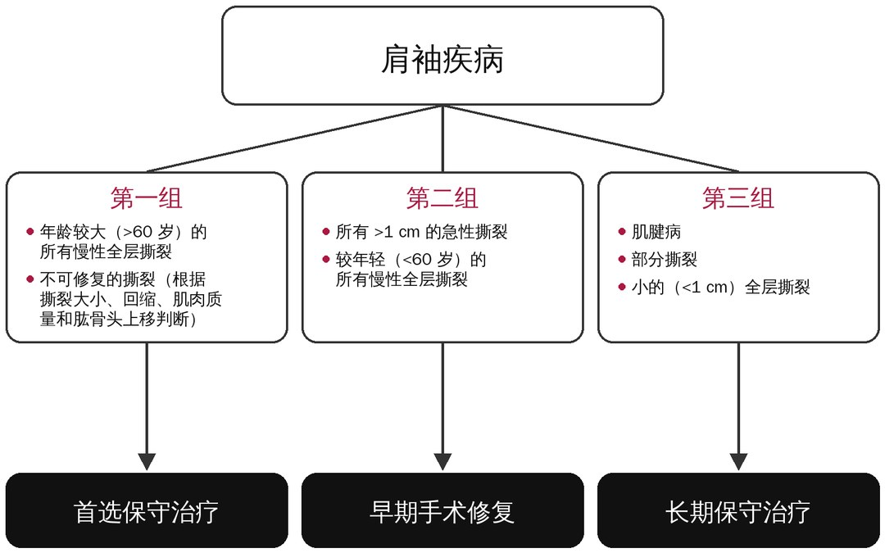
🔖图1：肩袖疾病的治疗决策流程（据 Tashjian 2012 改编）
| 分组 | 人群 | 推荐策略 |
|---|---|---|
| 第一组 | 年龄 >60 岁的慢性全层撕裂；不可修复的撕裂 | 首选保守治疗 |
| 第二组 | >1 cm 的急性撕裂；<60 岁的慢性全层撕裂 | 早期手术修复 |
| 第三组 | 肌腱病、部分撕裂、<1 cm 的小全层撕裂 | 长期保守治疗 |
一句话概括：老年慢性撕裂和小撕裂先练，年轻人的急性大撕裂尽早手术。
65%～70% 的肩痛与肩袖有关，但无症状的肩里也有 5%～40% 存在全层撕裂。几项经典研究：
| 研究 | 主要发现 |
|---|---|
| Sher 等 | 无症状人群中 34% 有肩袖撕裂（MRI） |
| Tempelhof 等 | 无症状人群总体 23% 有撕裂，80 岁以上达 51% |
| Yamaguchi 等 | 单侧有症状撕裂者，对侧 35% 也有撕裂（≥66 岁为 50%）；无症状撕裂中 51% 在平均 2.8 年内出现症状 |
| 部分 vs 全层 | 部分撕裂约 13%，全层撕裂约 7% |
所以影像上看到撕裂，不等于疼痛一定来自撕裂，更不等于一定要手术。
• 融合：冈上肌、冈下肌、小圆肌和肩胛下肌的肌腱在止点前约 15 mm 处融合成一体，止点处呈 5 层结构
• “吊桥”结构：肩袖索（rotator cable）像吊桥的缆绳，把应力分散到前后两端；索内侧较薄的肩袖新月区（crescent）是撕裂好发区
• 撕裂位置：Kim 等发现 83% 的全层撕裂和 72% 的部分撕裂位于肱二头肌长头腱后方约 15 mm 处
• 横向力偶：前方肩胛下肌与后方冈下肌、小圆肌相互平衡，维持肱骨头居中；肩胛下肌撕裂超过一半，可能出现假性麻痹
• 疼痛弧：外展 70°～120° 时疼痛
• 无力：外展、外旋无力；外旋迟滞征（lag sign）阳性提示冈下肌受累
• Lift-off 试验：用于检查肩胛下肌
• 夜间痛：常见，影响睡眠
| 类型 | 机制 | 要点 |
|---|---|---|
| 内因 | 肌腱退变、血供差、细胞凋亡 | 撕裂肌腱中凋亡细胞比例 34%，正常肌腱仅 13% |
| 外因 | 肩峰下撞击、肩峰形态 | 保守治疗成功率：Ⅰ型肩峰 89%、Ⅱ型 73%、Ⅲ型 58.3% |
可见肩峰越弯（Ⅲ型钩状），保守治疗越难成功，但即使是Ⅲ型，也有一半以上的人保守有效。
| 手术方式 | 结果 |
|---|---|
| 肩峰下减压 | 15 年随访 82% 肩袖保持完整 |
| 肩袖修复 | 5 年生存率 94%，10 年 83% |
| 修复后再撕裂 | 文献报道 20%～94% 不等 |
| Harryman 等 | 单腱、双腱、三腱撕裂修复后再撕裂率分别为 20%、43%、68% |
美国骨科医师学会（AAOS）指南：无症状的肩袖撕裂不建议手术。
老年人肌腱质量差、常伴肌肉萎缩和脂肪浸润，修复后愈合率低：一项研究中，术后 18 个月 >65 岁者仅 43% 愈合，而 <65 岁者为 86%。所以这组患者首选运动康复，无效再考虑手术。
• Safran 等：<60 岁的全层撕裂保守治疗，平均 29 个月后 49% 撕裂扩大；撕裂扩大者疼痛加重的比例为 56%，未扩大者仅 25%
• Maman 等：保守治疗 24 个月后 52% 撕裂扩大；随访超过 18 个月者 50% 扩大，18 个月以内仅 19%
• 时机：伤后 3 个月内修复，效果优于延迟修复
• Mall 等：无症状撕裂转为有症状时，40% 撕裂扩大
• Maman 等：有症状的部分撕裂只有 10% 扩大（>5 mm）
• Fucentese 等：小撕裂保守治疗，约 25% 扩大
这组患者即使年轻，撕裂进展的风险也低，保守治疗是合理选择。
| 研究 | 对象 | 结果 |
|---|---|---|
| MOON 研究（Kuhn 2013） | 381 例非外伤性全层撕裂，平均 62 岁 | 6～12 周物理治疗；6 周时 9% 选择手术，12 周再增加 6%，2 年时累计 26% |
| Goldberg 等 | 46 例 | 约 60% 改善，30% 加重，11% 无变化 |
| Kukkonen 等 | 167 肩，>55 岁 | 物理治疗、减压、修复三组 1 年结果无差异 |
| Moosmayer 等 | 103 例 <3 cm 撕裂 | 手术组 12 个月时更好，但物理治疗组仅 17% 失败需要手术；5 年时 37% 撕裂扩大 >5 mm |
| Moosmayer 等（自然病程） | 50 例无症状撕裂 | 3 年内 18 例出现症状 |
"Analysis revealed that most patients will elect to undergo surgery in the first 12 weeks; however, if a patient does not choose to have surgery within the first 12-weeks of non-operative rehabilitation, they are unlikely to require surgery for up to two years."
"分析显示，大多数患者会在头 12 周内选择手术；但如果在非手术康复的头 12 周内没有选择手术，那么至少两年内都不太可能需要手术。"
Tanaka 等提出 4 个有利因素：
• 外旋活动度 >52°
• 撞击征阴性
• 冈上肌几乎没有萎缩
• 冈上肌肌内腱保存完好
满足其中 ≥3 项的患者，保守治疗成功率达 87%。
• Bartolozzi 等：撕裂面积 >1 cm²、症状超过 1 年，预后较差
• MOON 研究：症状持续时间与撕裂严重度、萎缩、疼痛、力量均无相关，所以病程长短不一定是选手术的好指标
• 大撕裂：3～5 cm 的大撕裂和 >5 cm 的巨大撕裂一般手术获益更多，但也有巨大撕裂患者保守治疗后疼痛和功能改善
"The goal of exercise as part of the physical therapy regime is to correct modifiable physical impairments thought to contribute to pain and dysfunction, rather than to treat the pathology per se."
"物理治疗中运动的目的，是纠正那些可改变、可能导致疼痛和功能障碍的身体损害，而不是治疗病理本身。"
Littlewood 的系统综述显示：运动（无论在家还是在诊所）优于不治疗或安慰剂，与手术或多模式物理治疗效果相当。运动起效可能是多方面的：调节疼痛、刺激肌腱修复（“力学疗法”mechanotherapy）、肌肉代偿、减少运动恐惧。
先做被动的钟摆运动，再逐步过渡到用木棍或健侧手辅助的主动助力运动。
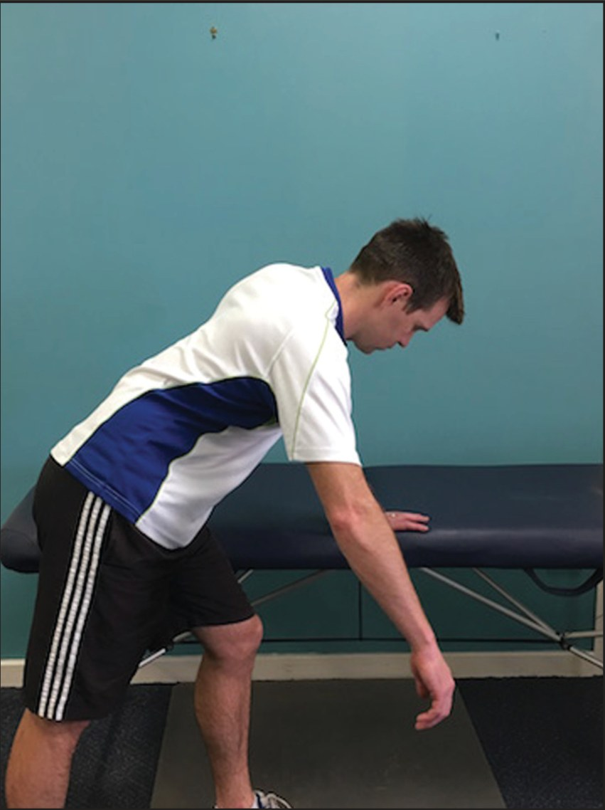
🔖图2：钟摆运动
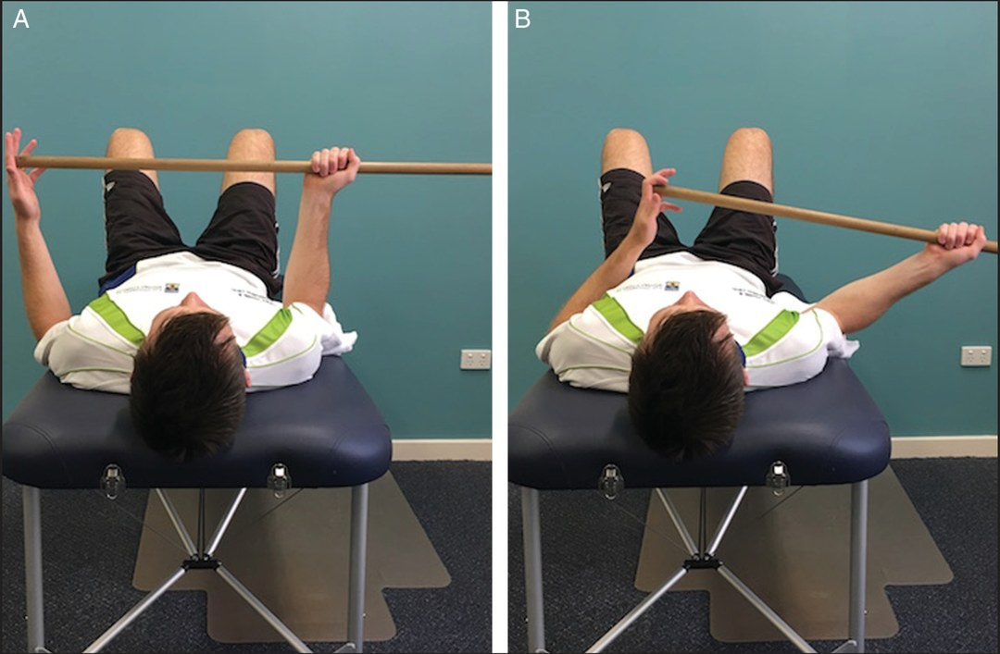
🔖图3：用木棍做主动助力外旋，由健侧手臂发力（A、B）
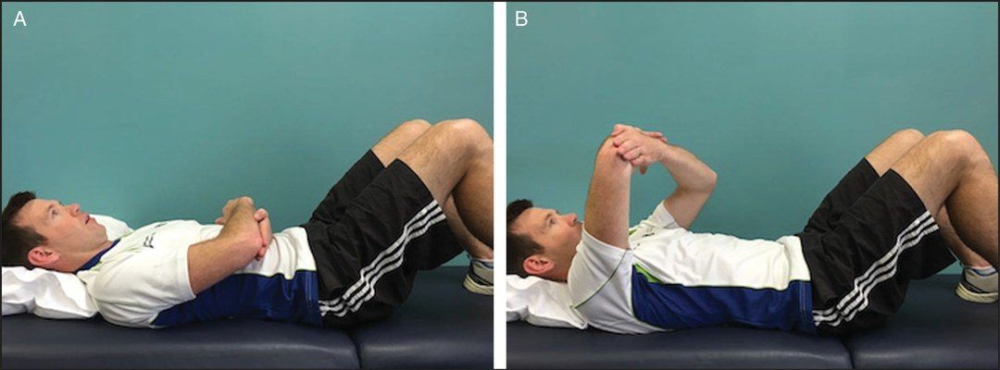
🔖图4：仰卧位主动助力上举，由健侧手臂发力（A、B）
胸小肌紧张和后关节囊僵硬，会让肩胛骨更多地内旋和前倾。所以力量训练前，要先拉伸后关节囊和胸小肌，并降低上斜方肌的过度激活。
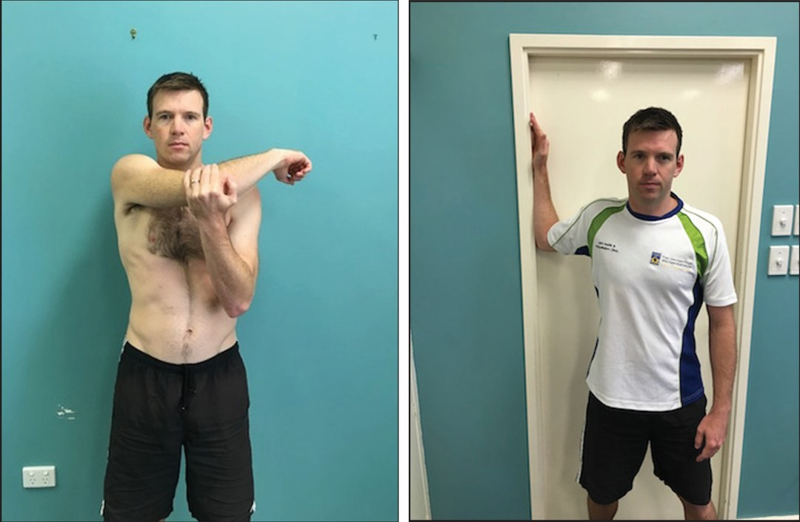
🔖图5（左）：交叉体位拉伸后关节囊；图6（右）：利用门框拉伸前关节囊和胸小肌
肩痛患者常见前锯肌无力、上斜方肌过早过度激活、中下斜方肌激活减少且延迟。训练目标是加强前锯肌和中下斜方肌、抑制上斜方肌。早期中等强度的激活就足够重建神经肌肉控制。
• 早中期：Kibler 推荐的 low row（低位划船）、lawnmower（割草机）、robbery（抢劫者）练习；前锯肌用仰卧前伸、靠墙俯卧撑
• 后期：dynamic hug（动态拥抱）和各种俯卧撑
• Cools 推荐：中下斜方肌高激活、上斜方肌低激活的动作，如侧卧外旋、侧卧前屈、俯卧水平外展加外旋、俯卧后伸
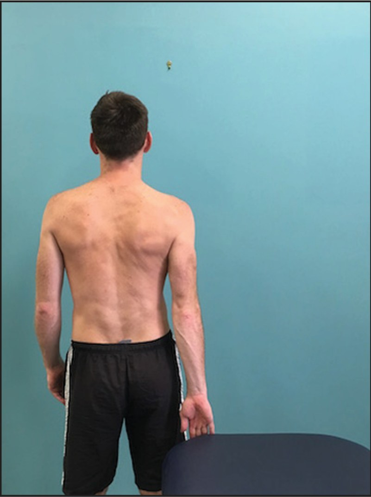
🔖图7：Kibler 描述的 low row 练习
肩袖撕裂后，三角肌的上拉力失去对抗，肱骨头上移。训练应针对剩余完好的肩袖，从低负荷开始。巨大撕裂时冈上肌、冈下肌都失效，小圆肌就变得关键：它提供 20%～45% 的外旋力量，而且通常不会撕裂。
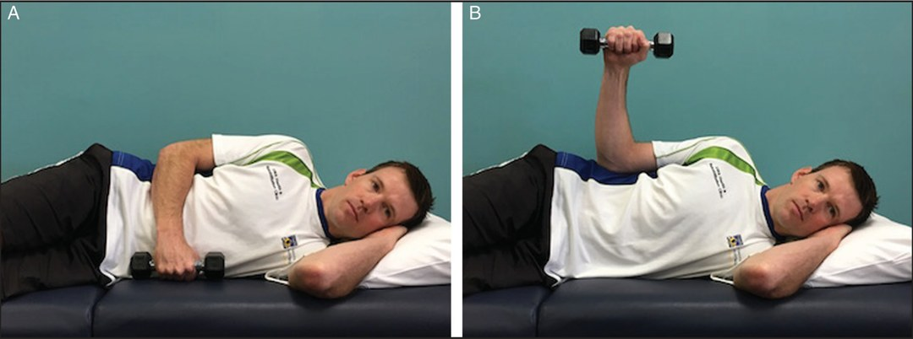
🔖图8：侧卧外旋（A、B）
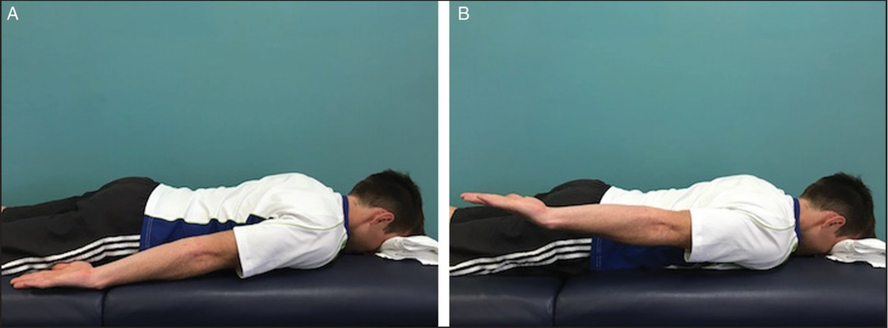
🔖图9：俯卧肩后伸（A、B）
Ainsworth 观察到，巨大撕裂患者靠前三角肌抬手而不让肱骨头上移，于是设计了 12 周的前三角肌和小圆肌渐进训练，疼痛和功能都改善；随后的随机对照试验显示，运动组改善更大更快。Levy 等对 17 名老年巨大撕裂患者的研究也得到类似结果，效果维持至少 9 个月。
进阶顺序：仰卧前屈 → 斜板前屈 → 站立前屈，逐步增加对抗重力的负荷。
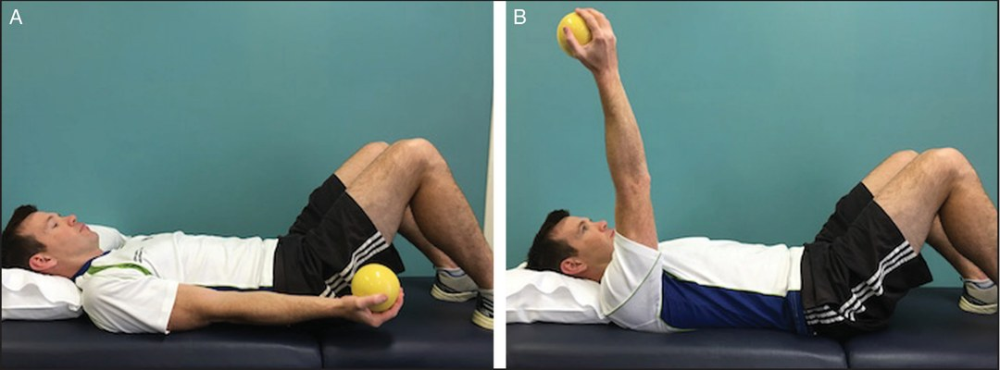
🔖图10：仰卧位肩前屈（A、B）
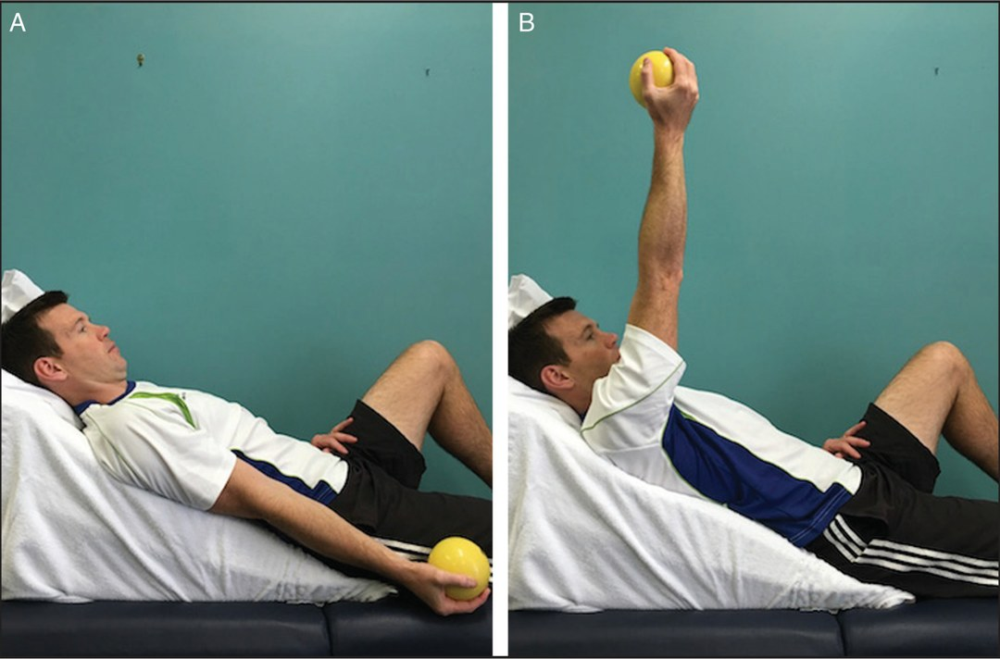
🔖图11：斜板位肩前屈（A、B）
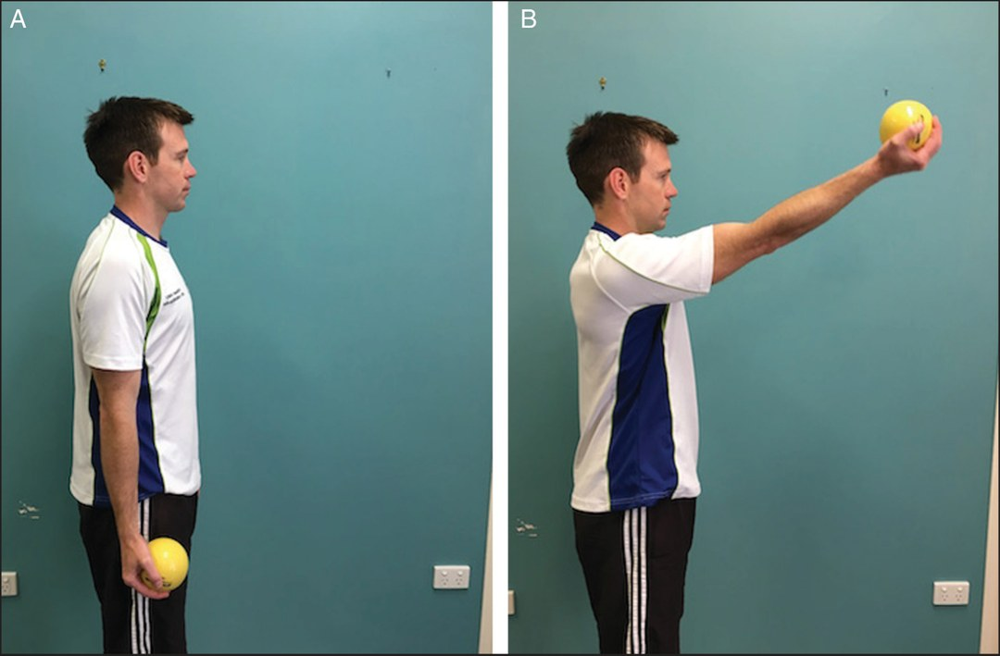
🔖图12：站立位肩前屈（A、B）
| 要素 | 建议 |
|---|---|
| 组数次数 | 3 组 × 10～15 次，每天 2 次 |
| 疼痛原则 | 疼痛监测模型：无痛或轻微不适下练习和进阶 |
| 最短周期 | 至少坚持 12 周，才能看到有临床意义的效果 |
| 何时寻求手术意见 | 文献建议保守 3～18 个月后无效再考虑 |
| 阶段一：活动度 | |
| 目标 | • 改善盂肱关节活动度（前屈、外展、外旋） • 改善姿势 |
| 被动活动 | • 前屈、内旋/外旋 • 钟摆运动（图 2） |
| 姿势 | • 姿势教育 • 肩胛定位（scapula setting） |
| 主动助力 | • 木棍辅助上举、外展、内收、内旋、外旋（图 3） • 滑轮辅助上举 |
| 主动活动 | • 靠墙滑动（wall slides） |
| 剂量 | 3 × 15 次，每天 |
| 进阶 | 根据舒适度，从被动活动和钟摆运动进阶到主动助力和主动活动 |
| 阶段二：柔韧性 | |
| 目标 | • 改善前、后关节囊的柔韧性，减轻紧张 |
| 前关节囊（胸小肌） | • 仰卧抱熊式拉伸 • 门框拉伸（图 6） |
| 后关节囊 | • 交叉体位拉伸（图 5） • 毛巾拉伸 |
| 其他 | • 上斜方肌拉伸 |
| 剂量 | 5 × 30 秒，每天 |
| 进阶 | 不适用 |
| 阶段三：力量 | |
| 目标 | • 加强肩胛稳定肌，提高动态控制 • 加强前三角肌，帮助上举 • 加强主动外旋力量 |
| 等长训练 | • 等长 low row（图 7） |
| 肩胛后缩/划船 | • 俯卧夹肩 • 俯卧后伸（图 9） • 弹力带俯身划船、坐姿划船、站姿划船 |
| 前伸/推 | • 仰卧前伸 • 靠墙前伸/后缩 • 靠墙俯卧撑 • 四点跪位前伸 • 弹力带站姿前推 |
| 前三角肌 | • 等长收缩 • 仰卧前屈（图 10） • 斜板前屈（图 11） • 站立前屈（图 12） |
| 外旋 | • 弹力带站立 0° 外旋 • 哑铃侧卧外旋（图 8） |
| 内旋 | • 弹力带站立 0° 内旋 • 哑铃侧卧内旋 |
| 剂量 | 每个动作 3 × 15 次，每周 3～4 次 |
| 进阶 | 在疼痛允许范围内练习；根据舒适度增加次数和负荷；不适超过合适程度时降低阻力 |
| 阶段四：力量/本体感觉（进阶） | |
| 目标 | • 进一步加强肩胛稳定肌和肩袖 • 引入与工作或运动相关的专项练习 |
| 前伸/推 | • 瑞士球直立俯卧撑 • 地面俯卧撑 • 站姿拉索前推 • 动态拥抱 |
| 后缩/划船 | • 站姿拉索划船 |
| 外旋 | • 坐姿和站姿 90° 外展位外旋（哑铃和弹力带） • 俯卧 90° 水平外展位外旋 |
| 内旋 | • 弹力带站立 90° 外展位内旋 |
| 剂量 | 3 × 15 次，每周 3～4 次 |
| 进阶 | 同阶段三 |
• 证据级别低：这是 5 级临床评论，附录中的运动方案基于文献和作者临床经验，没有经过对照试验验证
• 分组依据：三组分类来自 Tashjian 2012 的综述，界值（60 岁、1 cm）是经验性的，个体决策还要结合活动水平、撕裂大小和肌肉质量
• 年龄界值前后不一：流程图用的是 60 岁，而原文总结部分写的是“>65 岁”的慢性全层撕裂，阅读时需注意
• 研究异质性大：引用的保守治疗研究在人群、撕裂大小、方案和随访时间上差异很大，73%～80% 的有效率只能作为参考
• 剂量未知：作者也承认最佳运动剂量尚不明确，“3 × 10～15 次、每天 2 次”来自既往研究的常用做法
① 普遍：60 多岁约 25%、80 多岁超过 50% 有全层撕裂，很多人没有症状
② 分组：老年慢性撕裂先保守，年轻急性 >1 cm 撕裂早手术，小撕裂和部分撕裂长期保守
③ 有效：文献报道保守治疗对 73%～80% 的患者有效
④ 顺序：活动度 → 柔韧性 → 肩胛稳定与肩袖力量 → 进阶专项
⑤ 重点：前锯肌、中下斜方肌、小圆肌、前三角肌
⑥ 剂量：3 × 10～15 次，每天 2 次，至少 12 周；3～18 个月无效再寻求手术意见
欢迎关注骨科康复小黄公众号，获取更多物理治疗的专业知识！
📄参考文献：
Edwards P, Ebert J, Joss B, Bhabra G, Ackland T, Wang A. Exercise Rehabilitation in the Non-Operative Management of Rotator Cuff Tears: A Review of the Literature. Int J Sports Phys Ther. 2016;11(2):279-301. PMCID: PMC4827371.
文中图片均来自原文，图 1 已重绘为中文，附录 1 已译为中文表格，仅用于学术交流。